Hello World
-
Ведмедик
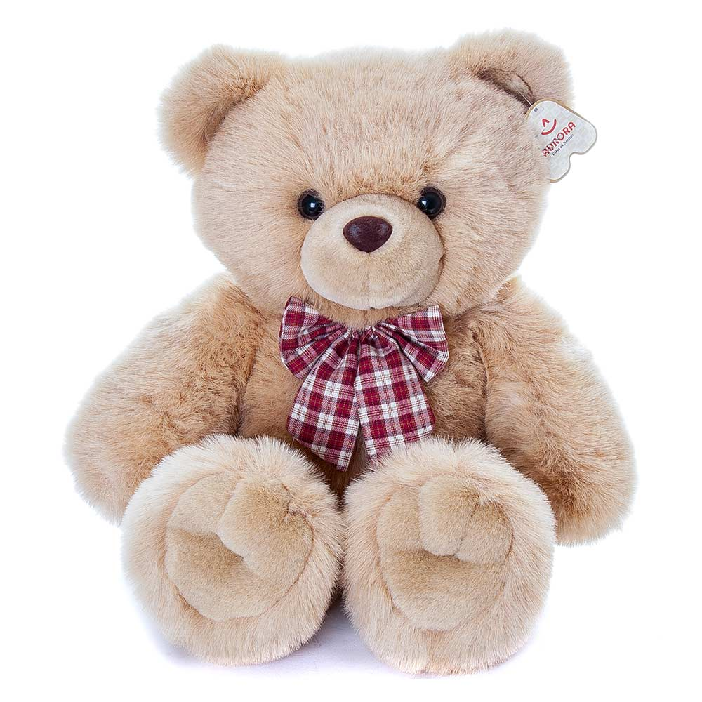Подаруйте тепло та ніжність із чарівним ведмедиком Тедді! Цей пухнастий друг виготовлений із надзвичайно м’якого гіпоалергенного матеріалу, приємного на дотик. Його великі очі, доброзичлива посмішка та вишуканий бантик роблять його ідеальним подарунком для дітей і дорослих.
430 грн 530 грн
-
Чудо острів

Музична розвиваюча іграшка "Чудо острів" — це справжня пригода для маленьких дослідників! Веселі звуки, яскраві кольори та рухливі елементи залучають дитину до активної гри, стимулюючи розвиток моторики, слуху та зору. Іграшка містить інтерактивні кнопки, які відтворюють музику, звуки природи та тваринок, перетворюючи гру на захоплюючу подорож на чарівний острів. Ідеально підходить для дітей від 6 місяців.
330 грн 430 грн
-
М'яке кошеня
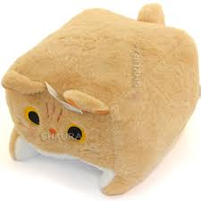Зустрічайте чарівне м’яке кошеня — пухнасте, ніжне та неймовірно миле! Іграшка виготовлена з м’якого плюшевого матеріалу, приємного на дотик, що ідеально підходить для обіймів і затишного сну. Кошеня має великі блискучі очі, акуратні вушка та милу мордочку, яка викликає посмішку з першого погляду. Наповнювач — легкий та гіпоалергенний, тож іграшка безпечна навіть для найменших діток. Це кошеня стане чудовим другом у грі, на ніч або під час поїздок. Ідеальний подарунок для дітей та всіх, хто любить тварин і затишні речі.
480 грн 580 грн
-
М'яка книжечка
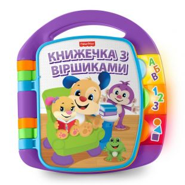Цікава та безпечна м’яка книжка — ідеальна перша книжечка для вашої дитини! Виготовлена з приємної на дотик тканини, вона абсолютно безпечна для немовлят і не має гострих країв чи твердих елементів. Книжка містить яскраві сторінки з простими малюнками, які сприяють розвитку зору, уваги та дрібної моторики. Деякі елементи шелестять або пищать, що викликає ще більше інтересу в дитини. Компактний розмір і легкість дозволяють брати книжку із собою на прогулянку або в подорож. Її можна прати, тому вона завжди залишатиметься чистою та свіжою.
120 грн 150 грн
-
Пірамідка
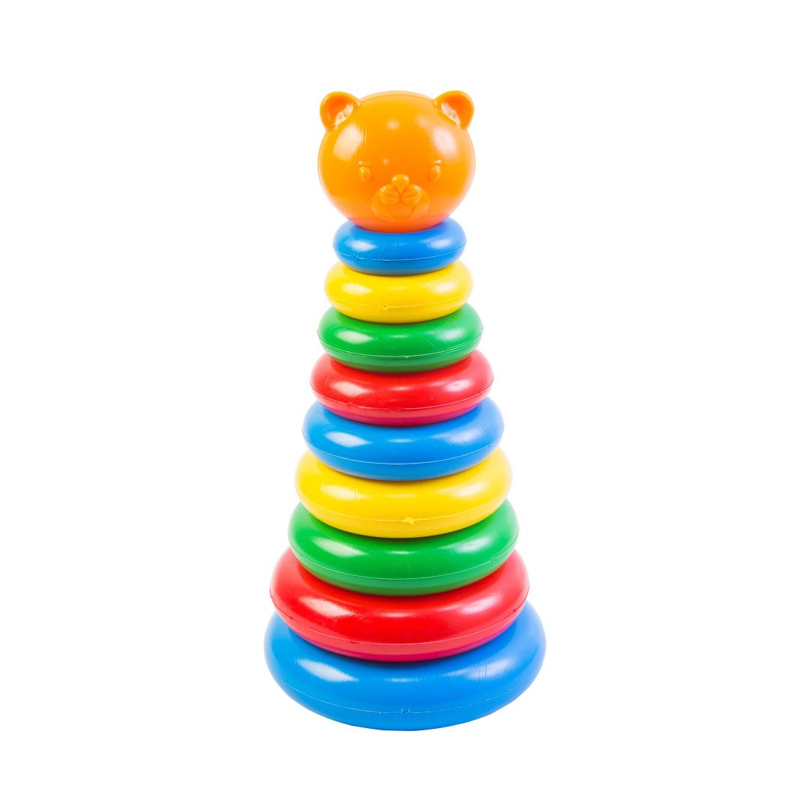Класична пірамідка — улюблена розвивальна іграшка для дітей від 6 місяців. Складається з основи та різнокольорових кілець різного розміру, які потрібно нанизувати одне за одним. Допомагає розвивати логіку, просторове мислення, дрібну моторику та координацію рухів. Яскраві кольори стимулюють зорове сприйняття та навчають розрізняти відтінки. Іграшка виготовлена з безпечного, міцного пластику або дерева (в залежності від варіанту), без гострих кутів і дрібних деталей.
90 грн 120 грн
-
Попуга
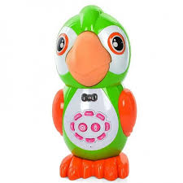М'яка іграшка Папуга — яскрава та приємна на дотик іграшка, яка обов’язково сподобається дітям. Папуга має пухнасті крильця, барвисте пір’ячко та милий дзьобик. Виготовлений із безпечних гіпоалергенних матеріалів, він стане чудовим другом для обіймів, ігор та розвитку уяви. Ідеально підходить як подарунок або прикраса дитячої кімнати.
180 грн 230 грн
-
Дерев'яна змійка
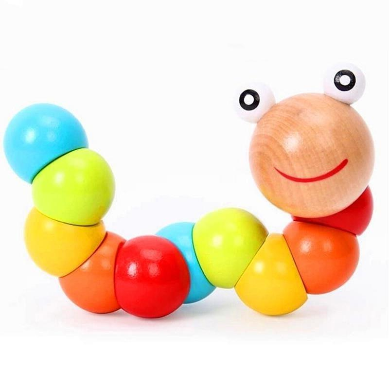Дерев'яна розвиваюча іграшка "Змійка" — яскрава та цікава іграшка, яка допомагає малюкам розвивати моторику рук, координацію та уяву. Складається з кількох дерев'яних сегментів, з’єднаних між собою гнучким шнурком, що дозволяє "змійці" звиватися та змінювати форму. Безпечні натуральні матеріали і якісна обробка роблять цю іграшку довговічною та приємною на дотик. Ідеальний вибір для маленьких дослідників і творчих дітей!
130 грн 175 грн
-
Руль
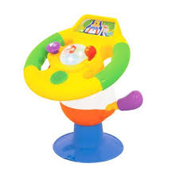Яскравий дитячий руль — чудова іграшка для маленьких автолюбителів! Виготовлений із безпечних матеріалів, цей кермо має насичені кольори, які привертають увагу малюка та стимулюють його цікавість. Руль оснащений кнопками, що можуть видавати звуки або світитись, допомагаючи розвивати координацію рук і моторні навички. Ідеально підходить для гри та навчання, а також для створення веселих автомобільних пригод вдома!
260 грн 315 грн
-
М'який слоник
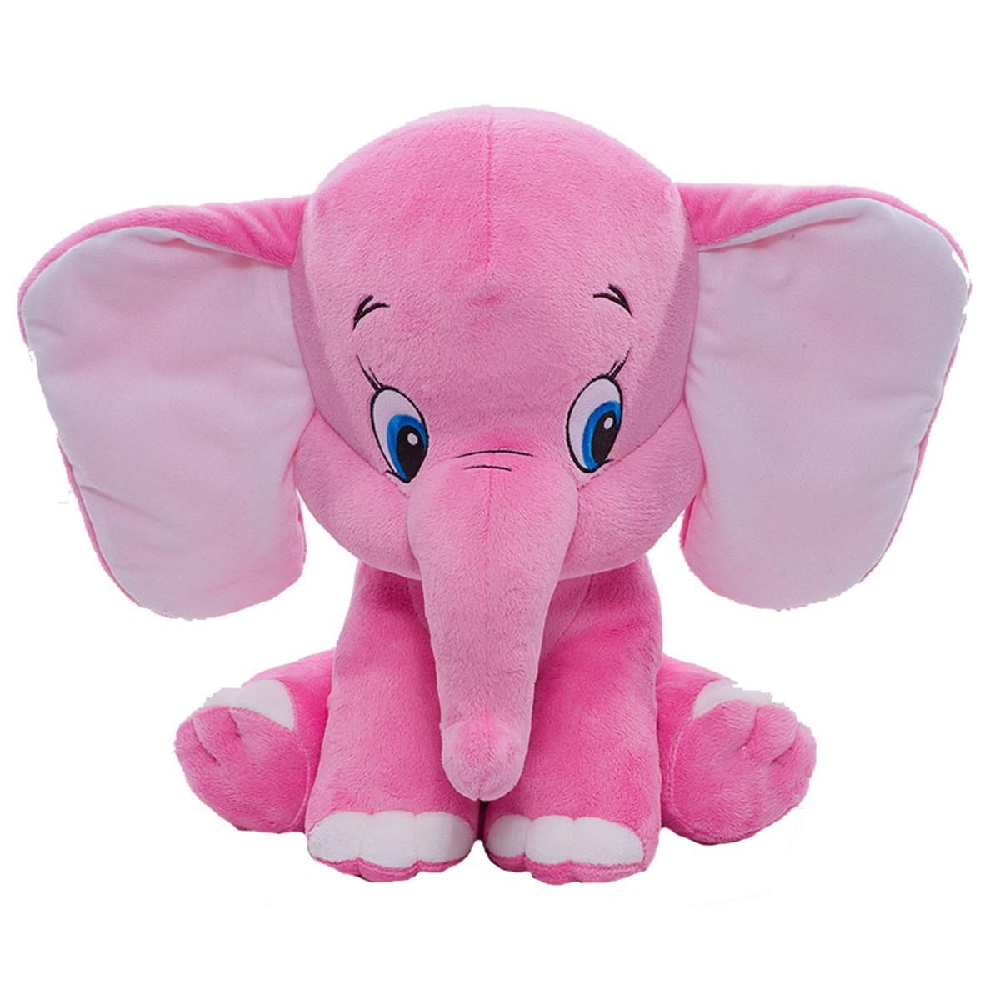М’який слоник — це ніжна іграшка, яка стане улюбленим другом вашої дитини. Виготовлений з приємного на дотик матеріалу, він дуже пухнастий і лагідний. Ідеально підходить для обіймів, гри та сну. Яскраві деталі, як великі вуха і добрі очі, роблять слоника особливим і привабливим для малюка. Ця іграшка допомагає розвивати тактильні відчуття та дарує комфорт і тепло.
520 грн 620 грн
-
Розвиваюча м'яка собака
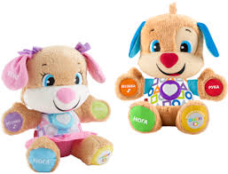Розвиваюча м’яка собака — це чудова іграшка для малюків, яка поєднує в собі ніжність м’яких матеріалів та навчальні елементи. Собачка виготовлена з приємного на дотик плюшу і має яскраві вставки різних текстур, які розвивають тактильні відчуття дитини. Вона оснащена різноманітними інтерактивними деталями — шурхотливими частинами, пищалками або різнокольоровими елементами, які допомагають розвивати моторику та увагу. Іграшка стимулює цікавість, дарує відчуття комфорту і стане надійним другом у перші роки життя малюка.
1100 грн 1200 грн
-
Стіч
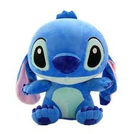М’який Стіч — це не просто акуратний і ніжний шов, а й модний тренд серед дитячих іграшок! Завдяки своїй м’якості він дарує комфорт і безпеку, а стильний вигляд робить його улюбленцем усіх дітей. Цей стіч — справжній герой мультфільмів, який приносить радість і затишок кожному малюку.
780 грн 880 грн
-
Розвиваючий телефон
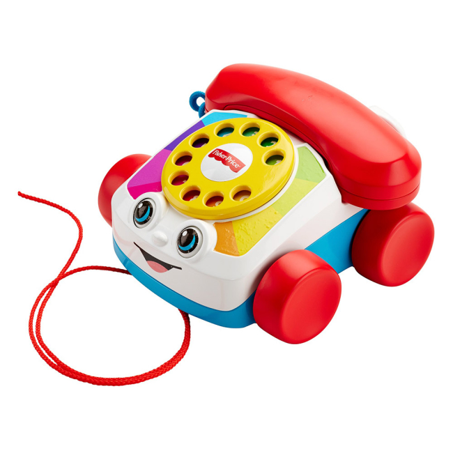Розвиваючий телефон — яскрава іграшка, яка допомагає діткам вчитися та розвивати навички через гру. Оснащений кнопками з різними звуками, мелодіями та світловими ефектами, він заохочує малюка досліджувати, тренувати моторику рук і розвивати увагу. Ідеальний для маленьких дослідників, цей телефон поєднує веселощі з навчанням, допомагаючи дитині зробити перші кроки у світі комунікацій.
340 грн 440 грн